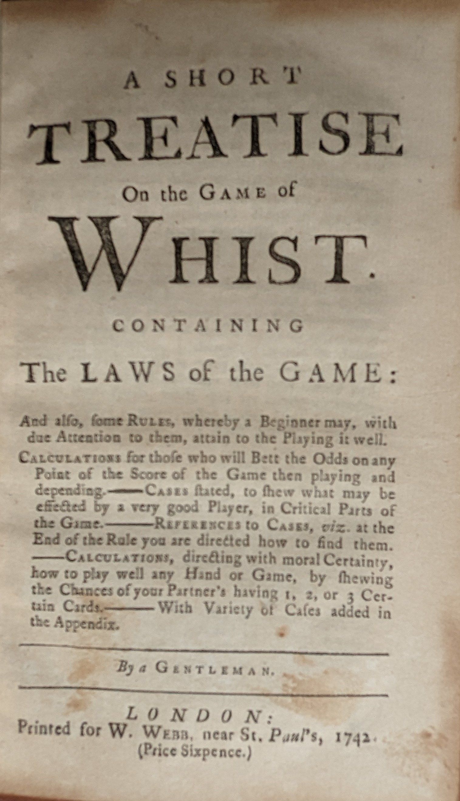

A Descriptive Bibliography of Edmond Hoyle
Copyright © 2014-26 by David Levy
(page updated 2024-10-10)User Guide
Whist.1.P.2
A Short Treatise on the Game of Whist, printed for W. Webb, second piracy of the first edition, 1743.
 |
Title: | A SHORT | TREATISE | On the Game of | Whist. | CONTAINING | The LAWS of the GAME: | And alſo, ſome Rules, whereby a Beginner may, with | due Attention to them, attain to the Playing it well. | Calculations for thoſe who will Bet the Odds on any | Point of the Score of the Game then playing and | depending. — Cases ſtated, to ſhew what may be | effected by a very good Player, in Critical Parts of | the Game. — References to Cases, viz. at the | End of the Rule you are directed how to find them. | — Calculations, directing with moral Certainty, | how to play well any Hand or Game, by ſhewing | the Chances of your Partner’s having 1, 2, or 3 Cer-|tain Cards. — With Variety of Caſes added in | the Appendix. | [rule] | By a Gentleman. | [rule] | LONDON: | Printed for W. Webb near St. Paul's, 1742. | (Price One Shilling.) |
| Collation: | 12o: π1,2 A–C6 [$½ signed]; 20 leaves, pp. [i–iii] iv, [1] 2–35 [36] |
| Contents: | Signature (Page) Reference | Contents | Signature (Page) Reference | Running Titles |
| π1r (i) | title | |||
| π1v (ii) | blank | |||
| π2r–π2v (iii–iv) | ‘ADVERTISEMENT. | [letter from a Gentleman at Bath]’ | |||
| A1r–C6r (1–35) | ‘[headpiece] | A SHORT | TREATISE | ON | The Game of Whist. | [...]’ | |||
| C6v (36) | ‘The CONTENTS. | [...]’ |
| Catchwords: | C1v(26) [none] [III. You] |
| Publisher: | James Watson, “W. Webb” |
| Printer: | James Watson (ornaments, Cogan v Chapelle) |
| Price: | 1s. (L copy) (title), 6d. (O, Levy copies) (title) |
| References: | ESTC T86128, Jessel 776, Rather 4 |
| Copies Seen: | L [7919.de.3(1)] (ECCO); O [Jessel e.637]; Levy [1534] |
| Notes: | The imprint is ficticious. W. Webb is a name often used by printers wishing to conceal their identity. The date is also incorrect—the book must have been printed after Whist.1.P.1.1 from which it copied the letter from a Gentleman at Bath. |